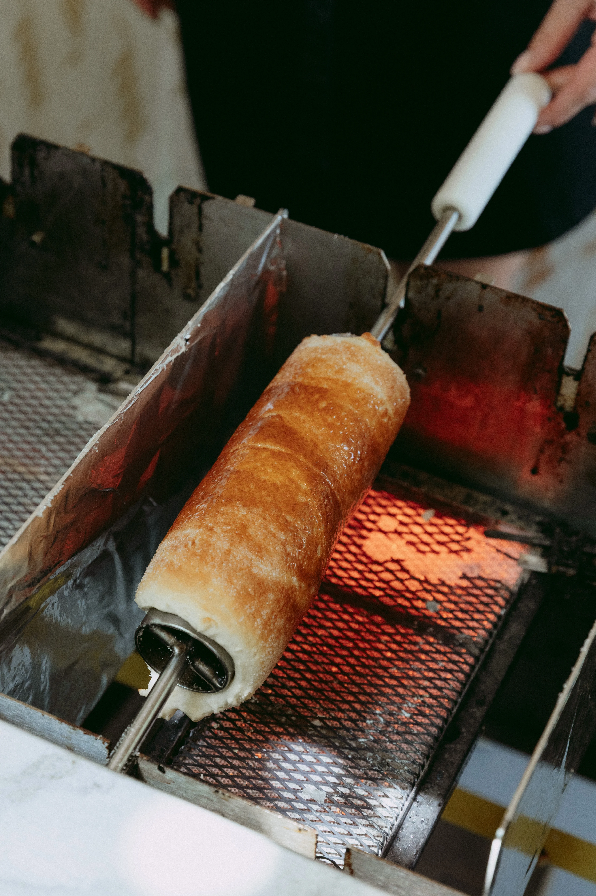

Le kürtős est une spécialité hongroise en forme de gâteau cheminée. Cuit à la broche, caramélisé, croustillant dehors, moelleux dedans — et préparé devant vous, sur place, à chaque événement.
Chaque kürtős suit le même chemin — simple, artisanal, fait devant vous. Cinq étapes, une odeur inoubliable.
Enroulée à la main autour d'un rouleau de bois ou d'inox.
Cuite au-dessus du grill. La pâte gonfle et dore.
Le sucre caramélise dehors, la pâte reste tendre dedans.
Sucre, cannelle, amandes ou tartinage à l'intérieur.
Gruyère ou olives & Gruyère — gratiné à la broche.

Pâte moelleuse, enroulée à la main en petites bandes autour d'un rouleau de bois ou d'inox. Chaque tour est précis pour que la cuisson soit uniforme et la texture parfaite.
Des saveurs sucrées, croustillantes ou gourmandes, et des versions salées originales — préparées sur place selon les événements et les saisons.
Les saveurs peuvent varier selon les événements, les saisons et les disponibilités. N'hésitez pas à nous contacter pour toute question.
Retrouvez le stand sur les festivals et marchés de Suisse — ou invitez-le directement à votre événement.